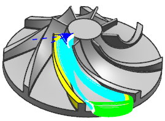

Multi-Blade milling enhancements
What is it?
In Multi-Blade milling you can now:
-
Finish blades by swarf cutting them.
-
Obtain a machinable tool path by using the enhanced tool axis controls.
-
Better orient the tool so that it avoids collisions by using the enhanced Automatic tool axis.
-
Specify the stock of adjacent blades in Blade Finish and Blend Finish operations.
-
Increase the depth of cut in roughing passes by adding intermediate levels for embedded cuts.
-
Finish cut the adjacent sides of opposing blades by using the Opposing Side option.
|

|
Opposing Sides
Where do I find it?
|
Application |
Manufacturing |
|
Location in dialog box |
(Opposing Side) Blade Finish or Blend Finish operation dialog box→Drive Method group→Edit |